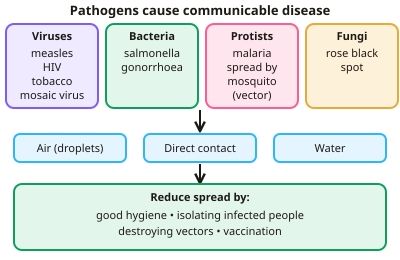

GCSE Biology · Topic 3
Infection and response
Infection and response is about the battle between pathogens and your body. Microbes like viruses and bacteria cause disease, and your body fights back.
We will meet the main pathogens and diseases, see how your defences and white blood cells work, and learn how vaccines, antibiotics and new medicines are developed and tested.
There is also the required practical on growing bacteria safely, which comes up in exams every year.
- 7 subtopics
- 180 questions
- Free: 3.1 notes and 10 questions
In this topic
- 3.1Pathogens and communicable diseasesFree below · 27 questions
- 3.2Human defences and vaccinationOpen in Full Marks · 23 questions
- 3.3Antibiotics and drug developmentOpen in Full Marks · 29 questions
- 3.4Monoclonal antibodies and plant disease (Biology only)Open in Full Marks · 25 questions
- 3.5Required/core practical: Culturing microorganisms, aseptic technique and testing antibiotics/antisepticsOpen in Full Marks · 31 questions
- 3.6Communicable diseases in detail: cholera, TB, malaria, HIV, Ebola, STIs and Chalara ash diebackOpen in Full Marks · 26 questions
- 3.7Human barriers to infection: skin, mucus, cilia, stomach acid and lysozymeOpen in Full Marks · 19 questions
3.1 · Free notes
Pathogens and communicable diseases

Key points
- Pathogens are microorganisms that cause infectious disease: viruses, bacteria, protists and fungi.
- They spread by air, direct contact and water. Spread is reduced by hygiene, isolating infected individuals, destroying vectors and vaccination.
- Viral: measles (fever, red rash), HIV (attacks the immune system; treated with antiretrovirals), tobacco mosaic virus (mosaic pattern on leaves).
- Bacterial: salmonella (food poisoning), gonorrhoea (STD; prevented with condoms, treated with antibiotics though resistance is increasing).
- Fungal: rose black spot. Protist: malaria, spread by mosquitoes.
In more detail
- How each pathogen harms you: bacteria reproduce rapidly and may release toxins that damage tissues; viruses live and reproduce inside cells, causing cell damage when they burst out.
- More diseases to know: tobacco mosaic virus makes a mosaic pattern on leaves, so less photosynthesis happens; rose black spot is a fungus spread by water and wind, treated with fungicides and by removing leaves.
- Malaria: the protist has a life cycle that includes the mosquito, which is the vector. Spread is reduced by stopping mosquitoes breeding and using nets to avoid bites.
- Preventing spread: hygiene (hand washing, disinfecting), isolating infected people, destroying or controlling vectors, and vaccination.
Practice
Pathogens and communicable diseases: 10 questions
Pick an answer to check it, or open the answer for the explanation.
1. Which disease is caused by a virus?
- Salmonella
- Measles
- Gonorrhoea
- Malaria
Show answer
B: Measles. Measles is a viral disease spread by droplets.
2. How is malaria spread?
- Air
- Mosquitoes
- Contaminated food
- Handshakes
Show answer
B: Mosquitoes. Mosquitoes are the vector for the malaria protist.
3. What does tobacco mosaic virus do to plants?
- Black spots on leaves
- Mosaic discolouration that reduces photosynthesis
- Root rot
- Makes flowers wilt
Show answer
B: Mosaic discolouration that reduces photosynthesis. Less chlorophyll means less photosynthesis and slower growth.
4. Which pathogen causes rose black spot?
- Virus
- Bacterium
- Fungus
- Protist
Show answer
C: Fungus. It spreads by spores in water and wind.
5. How can the spread of gonorrhoea be reduced?
- Vaccination
- Using condoms
- Killing mosquitoes
- Cooking food
Show answer
B: Using condoms. Gonorrhoea is sexually transmitted.
6. Which type of pathogen causes rose black spot?
- Virus
- Bacterium
- Fungus
- Protist
Show answer
C: Fungus. Fungal spores spread by water and wind.
7. How can the spread of malaria be reduced?
- Vaccination
- Using mosquito nets
- Cooking food thoroughly
- Hand washing
Show answer
B: Using mosquito nets. Nets reduce contact with the mosquito vector.
8. Which pair of symptoms is typical of measles?
- Thick discharge and pain when urinating
- Yellow leaves and stunted growth
- Diarrhoea and vomiting
- Fever and a red skin rash
Show answer
D: Fever and a red skin rash. Measles is a viral disease causing fever and a red rash. Diarrhoea and vomiting suggest salmonella; the discharge and pain suggest gonorrhoea.
9. What does HIV attack in the human body?
- The immune system's white blood cells
- The red blood cells
- The nerve cells in the brain
- The lining of the stomach
Show answer
A: The immune system's white blood cells. HIV infects and destroys white blood cells. Without them the body cannot fight other infections. This can lead to AIDS if HIV is untreated.
10. Salmonella food poisoning is caused by which type of pathogen?
- Bacterium
- Virus
- Protist
- Fungus
Show answer
A: Bacterium. Salmonella is a bacterium found in contaminated food such as undercooked poultry or eggs. It is not a virus or a protist.
Keep going in Full Marks
Full Marks has 27 questions on Pathogens and communicable diseases (17 more than here), set out in practice levels. You also get notes and 3D models for all 7 subtopics of Infection and response, plus games, timed exams and past papers.